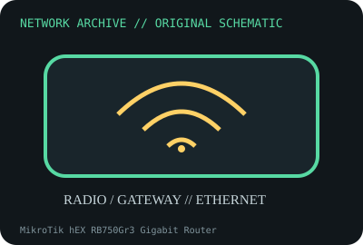

[ MODEL-SPECIFIC NETWORK HARDWARE ]
MikroTik hEX RB750Gr3 Gigabit Router
Five-port wired Gigabit router running RouterOS with USB and microSD. Confirm exact product label and revision before applying specifications.

IDENTIFICATION: Confirm manufacturer PID, hardware revision, device ID or module suffix. Nominal standards/link rates are not measurements of payload performance.
Exact specifications and compatibility
| Dedicated subcategory | Network appliances: routers, access points & switches |
|---|---|
| Exact product/model | MikroTik hEX RB750Gr3 Gigabit Router |
| Bus, ports and physical interface | Five 10/100/1000BASE-T RJ-45 ports; USB 2.0 Type-A, microSD slot, 12–57V DC input and passive PoE-in on Ether1 per manufacturer. |
| PHY, radio or protocol | MediaTek MT7621A dual-core network processor; RouterOS Layer 3 forwarding, VLAN and firewall capabilities are configuration/software dependent. |
| Nominal rate (not measured) | Five Gigabit port PHY rates do not define routed/NAT throughput; MikroTik publishes test results by packet size/configuration, not a universal line-rate claim. |
| Measured throughput | No measured benchmark is claimed for a physical specimen. A valid result must record host/peer, link partner, media/cable, driver/firmware, traffic pattern, test tool and duration. |
| Drivers, OS and firmware | RouterOS with license level specified by MikroTik; supported RouterOS version and features depend on device package/firmware. |
| Compatibility | Use documented DC voltage and polarity; PoE input is passive range, not automatically 802.3af/at. WAN/LAN roles configurable; preserve RouterOS configuration without secrets. |
| Variant warning | RB750Gr3 is hEX (not hEX S RB760iGS or hEX refresh). PoE input, SFP, CPU and licensing differ by model. |
Model and revision notes
RB750Gr3 is hEX (not hEX S RB760iGS or hEX refresh). PoE input, SFP, CPU and licensing differ by model.
RouterOS with license level specified by MikroTik; supported RouterOS version and features depend on device package/firmware.
Use documented DC voltage and polarity; PoE input is passive range, not automatically 802.3af/at. WAN/LAN roles configurable; preserve RouterOS configuration without secrets.
Archival, ESD and preservation notes
Record routerboard model, serial, RouterOS version/license, PSU, reset and ports. Back up configuration with credentials removed; store unpowered and dry.
Document source URL, access date, document revision and specimen label/condition. Preserve without credentials or private configuration.
Primary manufacturer and standards sources
- MikroTik hEX RB750Gr3 official product pagePrimary manufacturer or standards documentation; verify exact SKU and host revision.
- MikroTik RouterOS documentationPrimary manufacturer or standards documentation; verify exact SKU and host revision.
- IEEE 802.3 Ethernet standardsPrimary manufacturer or standards documentation; verify exact SKU and host revision.
Manufacturer statements cover the named part or its documented product family; the exact labeled revision and vendor compatibility list take precedence.